Space
Space is the vast, mysterious expanse beyond Earth'satmosphere, filled with stars, planets, galaxies, andcosmic phenomena. It has no air, making it a vacuum where sound cannot travel and temperatures vary extremely. Scientists explore space using telescopes, satellites, and spacecraft to understand the universe's origins and structure. Discoveries like black holes, nebulae, and exoplanets reveal how diverse and dynamic space is. Human missions, such as those to the Moon, have expanded our knowledge and inspired innovation. Studying space also helps us learn more about Earth, including climate patterns and planetary evolution, shaping our future exploration and survival efforts worldwide.
>Some Popular Space Stations in the World
--Click the image to know about the research centers--
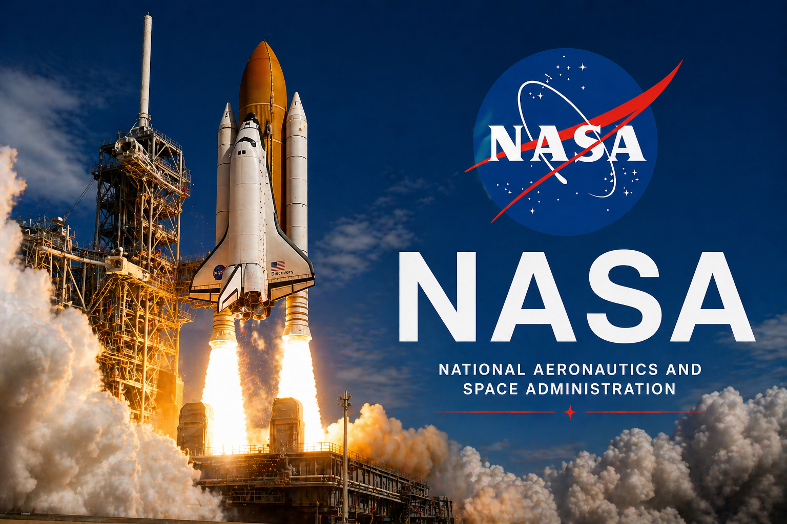
NASA is the United States’ space agency, established in 1958 to lead civilian space exploration and aeronautics research. It conducts missions to study Earth, the solar system, and the wider universe using satellites, telescopes, and spacecraft. Historic achievements include the Apollo 11 Moon Landing, which first placed humans on the Moon. NASA also operates the International Space Station in partnership with global agencies. Current programs focus on returning humans to the Moon through Artemis, exploring Mars, and advancing technologies that benefit science, climate studies, and future deep-space missions.
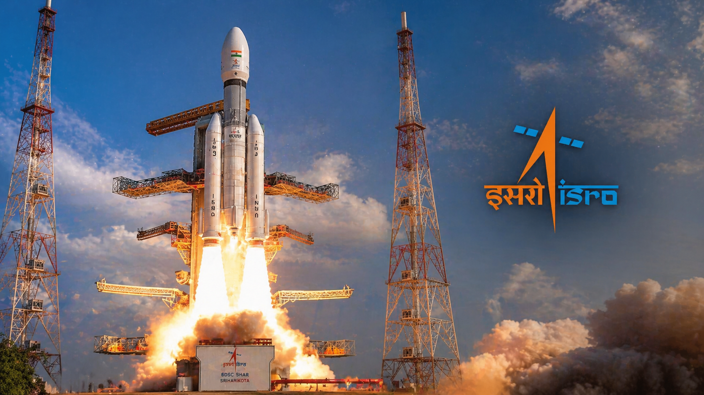
Indian Space Research Organisation (ISRO) is India’s premier space agency, founded in 1969 to develop space technology for national development and scientific research. It has achieved major milestones such as the Chandrayaan-3 Moon landing and the Mars Orbiter Mission, making India the first country to reach Mars on its maiden attempt. ISRO launches satellites for communication, navigation, and Earth observation using reliable rockets like PSLV and GSLV. It also supports disaster management and climate monitoring, while advancing future missions, including human spaceflight and deeper planetary exploration.
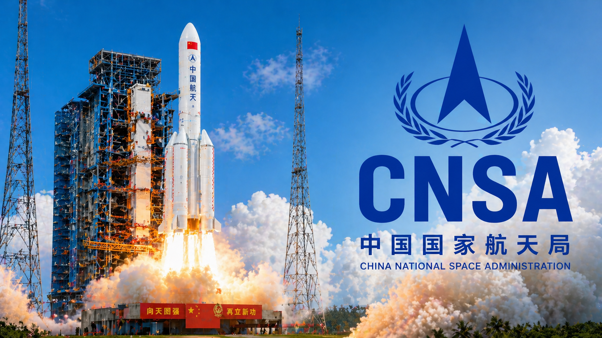
China National Space Administration (CNSA) is China’s national space agency, responsible for planning and developing space activities. Established in 1993, it manages satellite launches, lunar exploration, and deep-space missions. CNSA achieved global recognition with the Chang'e 4 mission and the Tiangong Space Station in low Earth orbit. It also operates the Tianwen-1, which successfully orbited, landed, and deployed a rover on Mars. The agency continues advancing technologies for human spaceflight, satellite navigation, and international cooperation in space science and exploration.
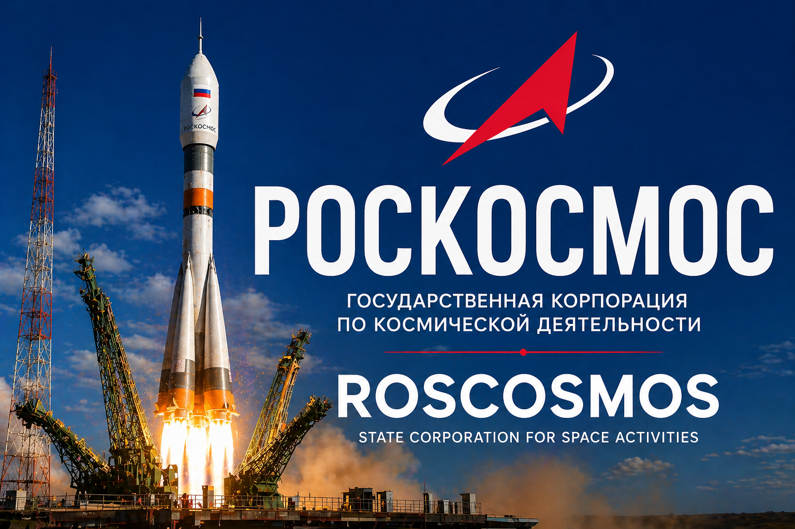
Roscosmos is Russia’s national space agency, responsible for civilian space exploration and aerospace research. Formed in 1992 after the dissolution of the Soviet Union, it continues the legacy of pioneering achievements like launching the first satellite, Sputnik 1, and sending the first human, Yuri Gagarin, into space. Roscosmos manages human spaceflight missions, satellite launches, and the Russian segment of the International Space Station. It develops rockets such as Soyuz and Proton and works on future projects, including lunar exploration and advanced spacecraft technologies.
Planets
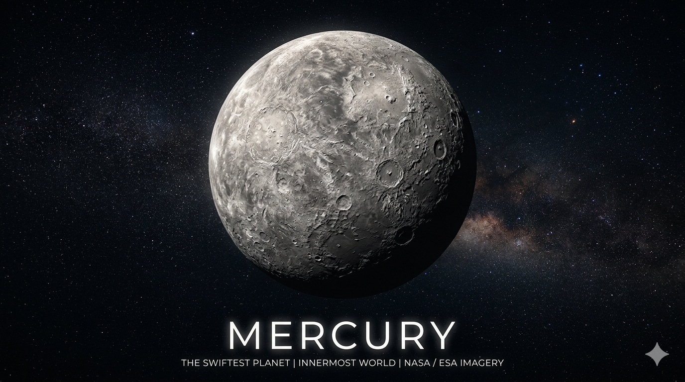
Mercury
Mercury is the closest planet to the Sun and the smallest in the Solar System. It moves around the Sun faster than any other planet, completing one orbit in just 88 Earth days. Because of its proximity to the Sun, Mercury is often visible from Earth only during early morning or evening twilight.
🔹 Physical Characteristics
Mercury is a rocky planet with a solid surface covered in craters, much like Earth’s Moon. It has a diameter of about 4,880 kilometers, making it the smallest planet. The surface also features cliffs and plains formed by ancient volcanic activity, giving it a rugged and uneven appearance.
🔹 Temperature
Mercury experiences extreme temperature variations due to its lack of a thick atmosphere. During the day, temperatures can rise up to 430°C, while at night they can drop to -180°C. These dramatic changes make Mercury one of the most extreme planets in terms of climate.
🔹 Atmosphere
Mercury has an extremely thin atmosphere, known as an exosphere, which is made up of oxygen, sodium, hydrogen, and helium. This weak layer is not strong enough to retain heat or protect the planet from space debris, contributing to its heavily cratered surface.
🔹 Orbit and Rotation
Mercury has a unique motion compared to other planets. It takes 88 Earth days to orbit the Sun, but rotates very slowly on its axis, taking about 59 Earth days. As a result, a single day on Mercury (sunrise to sunrise) lasts about 176 Earth days.
🔹 Surface Features
The surface of Mercury is filled with impact craters caused by collisions with asteroids and meteoroids. One of the most notable features is the **Caloris Basin**, a crater formed by a massive impact. The planet also has long cliffs called scarps, created as it cooled and shrank over time.
🔹 Exploration
Mercury has been explored by spacecraft such as **Mariner 10** and **MESSENGER**. These missions provided detailed images and valuable data about the planet’s surface, composition, and magnetic field, helping scientists understand its history and structure.
🔹 Possibility of Life
Mercury is not suitable for life as we know it. The extreme temperatures, intense solar radiation, and lack of a protective atmosphere make it impossible for living organisms to survive on the planet.
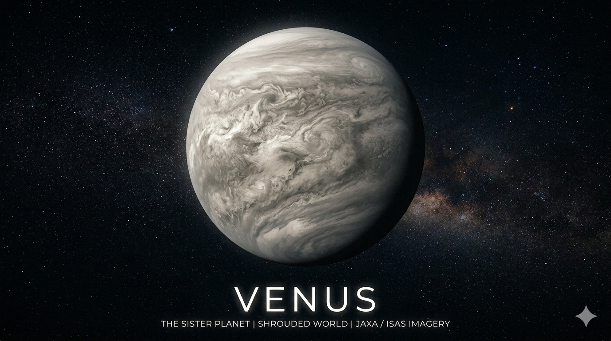
Venus
Venus is the second planet from the Sun and is often called Earth’s “sister planet” because of its similar size and structure. It is one of the brightest objects in the night sky and is sometimes known as the Morning Star or Evening Star.
🔹 Physical Characteristics
Venus is a rocky planet with a diameter of about 12,104 kilometers, making it slightly smaller than Earth. Its surface is covered with mountains, vast plains, and volcanic features. Unlike Earth, Venus has very few impact craters due to its thick atmosphere.
🔹 Temperature
Venus is the hottest planet in the Solar System. Surface temperatures can reach around 465°C, which is hot enough to melt lead. This extreme heat is caused by a strong greenhouse effect that traps heat within its atmosphere.
🔹 Atmosphere
Venus has a very thick and dense atmosphere composed mainly of carbon dioxide, with clouds of sulfuric acid. This atmosphere creates intense pressure—about 90 times greater than Earth’s—and traps heat, making the planet extremely hot and hostile.
🔹 Orbit and Rotation
Venus takes about 225 Earth days to orbit the Sun. However, it rotates very slowly and in the opposite direction (retrograde rotation), taking about 243 Earth days to complete one rotation. This means a day on Venus is longer than its year.
🔹 Surface Features
The surface of Venus includes volcanoes, lava plains, and highland regions. One of its most famous volcanic features is **Maat Mons**, one of the largest volcanoes on the planet. Much of the surface appears relatively young due to past volcanic activity.
🔹 Exploration
Venus has been explored by several spacecraft, including missions by the **NASA** and the **Soviet space program**. The Soviet Venera missions were the first to successfully land on Venus and send back data from its surface.
🔹 Possibility of Life
Venus is not suitable for life due to its extreme heat, crushing atmospheric pressure, and toxic clouds. However, some scientists study its upper atmosphere for the possibility of microbial life, though no evidence has been confirmed.
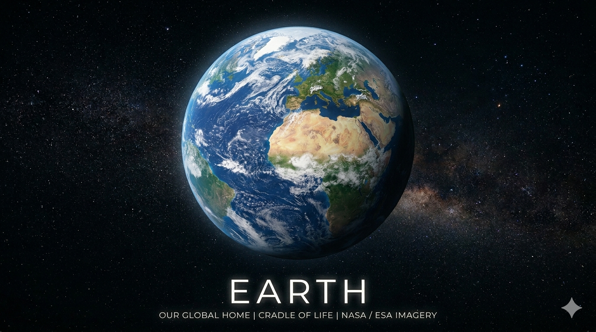
Earth
Earth is the third planet from the Sun and the only known planet to support life. It is often called the “Blue Planet” because of its vast oceans, which cover about 71% of its surface. Earth has a balanced environment that makes it suitable for living organisms.
🔹 Physical Characteristics
Earth is a rocky planet with a diameter of about 12,742 kilometers, making it the largest of the terrestrial planets. It has diverse landscapes including mountains, valleys, forests, deserts, and oceans. Its surface is constantly changing due to natural processes like erosion and plate tectonics.
🔹 Temperature
Earth has a moderate climate compared to other planets. The average surface temperature is around 15°C, allowing water to exist in solid, liquid, and gaseous forms. This stable temperature range supports a wide variety of life.
🔹 Atmosphere
Earth has a protective atmosphere composed mainly of nitrogen (78%) and oxygen (21%), with small amounts of other gases. This atmosphere shields the planet from harmful solar radiation and helps regulate temperature through a mild greenhouse effect.
🔹 Orbit and Rotation
Earth takes about 365.25 days to orbit the Sun, which defines one year. It rotates on its axis every 24 hours, creating day and night. Earth’s tilt of about 23.5 degrees is responsible for the changing seasons.
🔹 Surface Features
Earth’s surface includes continents, oceans, rivers, and polar ice caps. It is the only known planet with liquid water on its surface. The movement of tectonic plates shapes its geography and leads to natural events like earthquakes and volcanic eruptions.
🔹 Exploration
Earth is extensively studied using satellites, space stations, and ground-based research. Organizations like NASA and other space agencies monitor climate, weather, and environmental changes to better understand the planet.
🔹 Possibility of Life
Earth is the only known planet where life exists. It supports millions of species, including humans, due to the presence of water, oxygen, and suitable temperatures. Scientists continue to study Earth to understand how life evolved and how to protect it for the future.
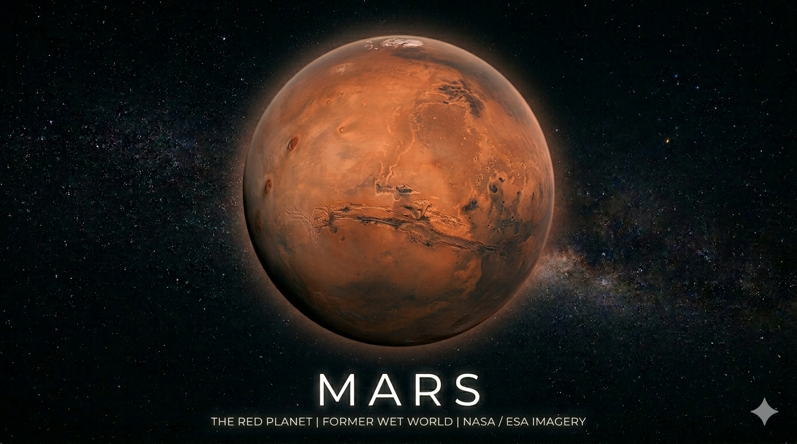
Mars
Mars is the fourth planet from the Sun and is often called the “Red Planet” because of its reddish appearance caused by iron oxide (rust) on its surface. It is one of the most studied planets due to its similarities to Earth and the possibility that it may have once supported life.
🔹 Physical Characteristics
Mars is a rocky planet with a diameter of about 6,779 kilometers, making it about half the size of Earth. Its surface features include huge volcanoes, deep valleys, deserts, and polar ice caps. It is home to Olympus Mons, the largest volcano in the solar system, and Valles Marineris, a massive canyon system.
🔹 Temperature
Mars has a much colder climate than Earth. The average surface temperature is around -63°C, but it can vary widely from about 20°C near the equator during the day to as low as -125°C at the poles during winter. These extreme conditions make it difficult for life to survive.
🔹 Atmosphere
Mars has a thin atmosphere composed mostly of carbon dioxide (about 95%), with small amounts of nitrogen and argon. Because of its thin atmosphere, Mars cannot retain much heat, and it offers little protection from harmful solar radiation.
🔹 Orbit and Rotation
Mars takes about 687 Earth days to orbit the Sun, making one Martian year nearly twice as long as a year on Earth. It rotates on its axis in about 24.6 hours, which is quite similar to Earth’s day. Mars also has a tilt of about 25 degrees, resulting in seasons similar to those on Earth.
🔹 Surface Features
Mars has a dry, dusty surface covered with iron-rich soil. It has two small moons, Phobos and Deimos. Evidence suggests that liquid water once flowed on Mars, as seen in dried riverbeds and mineral deposits, but today water mostly exists as ice beneath the surface and at the poles.
🔹 Exploration
Mars has been explored by numerous spacecraft, including orbiters, landers, and rovers. Missions from space agencies like NASA, ESA, and others have studied its surface, climate, and geology. Rovers such as Curiosity and Perseverance are actively exploring the planet to search for signs of past life.
🔹 Possibility of Life
Mars is one of the most promising places in the solar system to search for past or present life. While no direct evidence of life has been found, scientists believe that microbial life may have existed when the planet had liquid water. Ongoing missions continue to investigate its potential to support life.
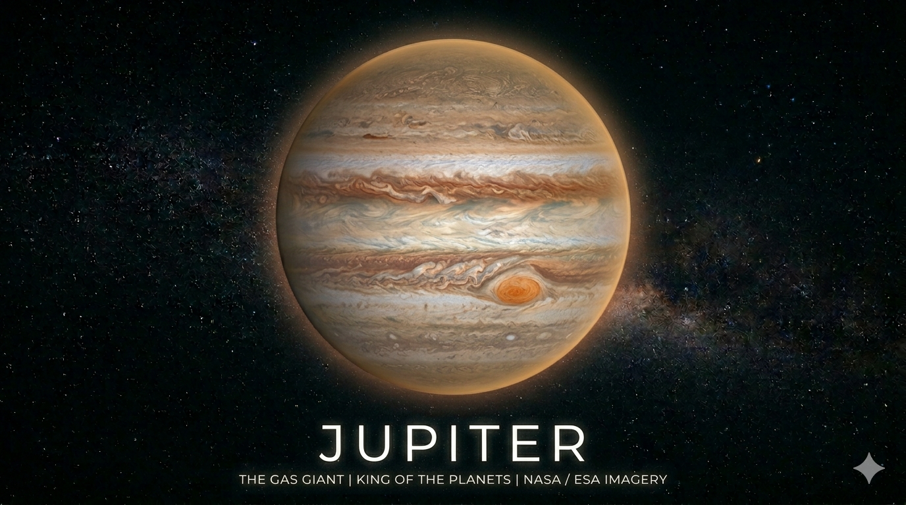
Jupiter
Jupiter is the fifth planet from the Sun and the largest planet in the solar system. It is known as a “gas giant” because it is mostly made of gases rather than solid ground. Jupiter is famous for its Great Red Spot, a massive storm that has been raging for hundreds of years.
🔹 Physical Characteristics
Jupiter has a diameter of about 139,820 kilometers, making it more than 11 times wider than Earth. It is primarily composed of hydrogen and helium. The planet has no solid surface; instead, it has thick clouds and swirling storms. Its colorful bands are caused by strong winds and different chemical compositions in its atmosphere.
🔹 Temperature
Jupiter is extremely cold due to its distance from the Sun. The average temperature at the cloud tops is around -145°C. However, temperatures increase significantly deeper inside the planet due to immense pressure and internal heat.
🔹 Atmosphere
Jupiter’s atmosphere is made mostly of hydrogen and helium, with traces of methane, ammonia, and water vapor. It has powerful storms and winds that can reach speeds of over 600 km/h. The Great Red Spot is the most well-known storm in its atmosphere.
🔹 Orbit and Rotation
Jupiter takes about 12 Earth years to orbit the Sun. It has the shortest day of all the planets, rotating on its axis in just about 10 hours. This rapid rotation causes the planet to bulge at its equator and creates strong magnetic fields.
🔹 Surface Features
Jupiter does not have a solid surface like Earth. Instead, it has layers of gas that become denser with depth. Beneath the atmosphere, there may be a core made of rock and metal. The planet is surrounded by a faint ring system and has many moons, including the four large Galilean moons: Io, Europa, Ganymede, and Callisto.
🔹 Exploration
Jupiter has been explored by several spacecraft, including Pioneer, Voyager, Galileo, and Juno missions. These missions have provided valuable information about its atmosphere, magnetic field, and moons. NASA’s Juno spacecraft is currently studying Jupiter in detail.
🔹 Possibility of Life
Jupiter itself is unlikely to support life due to its extreme conditions and lack of a solid surface. However, some of its moons, especially Europa, are considered promising places to search for life because they may have subsurface oceans beneath their icy crusts.
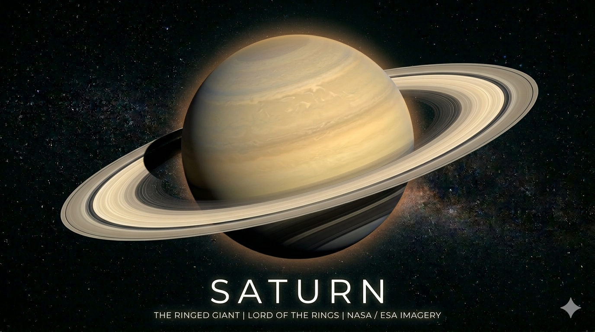
Saturn
Saturn is the sixth planet from the Sun and the second-largest planet in the Solar System. It is best known for its stunning ring system, making it one of the most visually unique planets.
🔹 Physical Characteristics
Saturn is a gas giant composed mainly of hydrogen and helium. It has a diameter of about 120,536 kilometers, making it much larger than Earth. Unlike rocky planets, Saturn does not have a solid surface.
🔹 Temperature
Saturn is a very cold planet due to its distance from the Sun. The average temperature is around -178°C. Its upper atmosphere is cold and windy, with powerful storms occurring at times.
🔹 Atmosphere
Saturn’s atmosphere is mostly made of hydrogen and helium, with traces of methane and ammonia. It has bands of clouds and strong winds, similar to those seen on Jupiter.
🔹 Orbit and Rotation
Saturn takes about 29.5 Earth years to orbit the Sun. It rotates very quickly, completing one rotation in about 10.7 hours, which causes it to have a slightly flattened shape at the poles.
🔹 Rings
Saturn’s rings are its most famous feature. They are made up of billions of particles of ice and rock, ranging in size from tiny grains to large chunks. These rings are wide but very thin and give Saturn its beautiful appearance.
🔹 Moons
Saturn has more than 80 known moons. One of the most important is **Titan**, which is larger than the planet Mercury and has a thick atmosphere.
🔹 Exploration
Saturn has been explored by spacecraft such as **Cassini–Huygens**, which provided detailed information about the planet, its rings, and its moons.
🔹 Possibility of Life
Saturn itself cannot support life because it is a gas giant with no solid surface. However, some of its moons, especially Titan, are studied for the possibility of supporting life in the future.
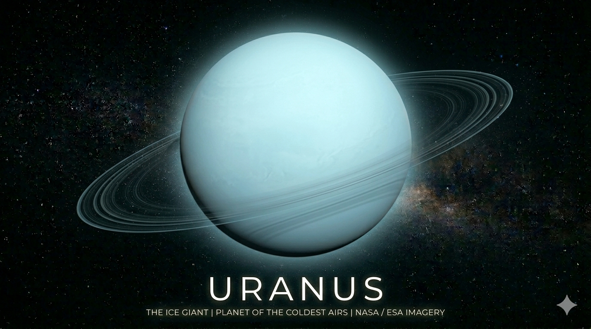
Uranus
**Uranus** is the seventh planet from the Sun and is known as an ice giant. It has a blue-green color due to the presence of methane in its atmosphere, making it one of the most unique-looking planets in the Solar System.
🔹 Physical Characteristics
Uranus has a diameter of about 50,724 kilometers, making it the third-largest planet. It is composed mainly of icy materials such as water, ammonia, and methane, along with hydrogen and helium gases. Unlike Earth, it does not have a solid surface.
🔹 Temperature
Uranus is one of the coldest planets in the Solar System. Temperatures can drop as low as -224°C, mainly because it receives very little heat from the Sun and has minimal internal heat.
🔹 Atmosphere
The atmosphere of Uranus is made up of hydrogen, helium, and methane. Methane absorbs red light and reflects blue light, giving the planet its blue-green appearance. The atmosphere also contains clouds and experiences strong winds.
🔹 Orbit and Rotation
Uranus takes about 84 Earth years to complete one orbit around the Sun. It rotates once every 17 hours. Uniquely, Uranus rotates on its side with an axial tilt of about 98 degrees, unlike most other planets.
🔹 Unique Feature
One of the most unusual features of Uranus is its sideways rotation. This extreme tilt causes long seasons, where each pole can face the Sun continuously for many years.
🔹 Rings
Uranus has a faint ring system made up of dark, narrow rings. These rings are not as bright or prominent as those of Saturn but still add to the planet’s uniqueness.
🔹 Moons
Uranus has 27 known moons. One of the largest is **Titania**, which has a surface of ice and rock with many craters and valleys.
🔹 Exploration
Uranus has been explored by only one spacecraft, **Voyager 2**, which flew past the planet in 1986 and provided most of the detailed information we have today.
🔹 Possibility of Life
Uranus cannot support life due to its extremely cold temperatures, lack of a solid surface, and harsh atmospheric conditions.
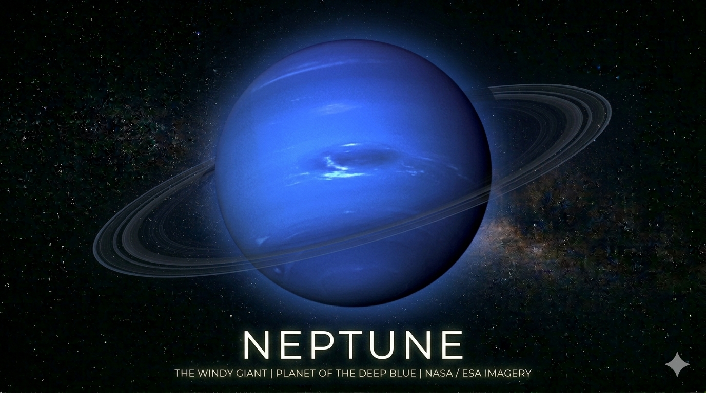
Neptune
**Neptune** is the eighth and farthest planet from the Sun. It is known for its deep blue color and is classified as an ice giant. Neptune is a distant and mysterious world with extreme weather conditions.
🔹 Physical Characteristics
Neptune has a diameter of about 49,244 kilometers, making it slightly smaller than Uranus. It is composed mainly of icy materials like water, ammonia, and methane, along with hydrogen and helium gases. It does not have a solid surface like Earth.
🔹 Temperature
Neptune is extremely cold due to its distance from the Sun. Average temperatures are around -214°C. Despite this, it has a very active atmosphere with powerful storms.
🔹 Atmosphere
The atmosphere of Neptune is made up of hydrogen, helium, and methane. Methane gives the planet its deep blue color. The atmosphere also has fast-moving clouds and the strongest winds in the Solar System.
🔹 Orbit and Rotation
Neptune takes about 165 Earth years to complete one orbit around the Sun. It rotates relatively quickly, completing one rotation in about 16 hours.
🔹 Weather
Neptune experiences the fastest winds in the Solar System, reaching speeds of over 2,000 km/h. A famous storm known as the **Great Dark Spot** has been observed on the planet.
🔹 Rings
Neptune has a faint ring system made of dark particles and dust. These rings are not as visible as Saturn’s but are still an important feature of the planet.
🔹 Moons
Neptune has 14 known moons. The largest moon is **Triton**, which orbits the planet in the opposite direction and has geysers that release nitrogen gas.
🔹 Exploration
Neptune has been visited by only one spacecraft, **Voyager 2**, which flew past the planet in 1989 and provided valuable data and images.
🔹 Possibility of Life
Neptune is not suitable for life due to its extremely cold temperatures, lack of a solid surface, and harsh atmospheric conditions.

🌌 Overview of the Solar System
The Solar System is a vast cosmic neighborhood centered around the Sun. It consists of eight planets, their
moons, dwarf planets, asteroids, comets, and other celestial objects bound together by gravity. Formed about 4.6
billion years ago from a giant cloud of gas and dust, the Solar System is located in the Milky Way Galaxy. The
Sun contains more than 99% of the system’s total mass, making it the dominant force that governs the motion of
all objects within it.
☀️ The Sun: The Heart of the System
The Sun is a massive ball of hot plasma that provides light and heat to all the planets. Its energy is produced
through nuclear fusion, where hydrogen atoms combine to form helium, releasing enormous energy. This energy
supports life on Earth and drives weather and climate. The Sun’s gravitational pull keeps all planets and other
objects in orbit, acting as the anchor of the Solar System.
🪐 The Planets
The Solar System has eight major planets, divided into two groups: terrestrial (rocky) and gas giants.
🔹 Inner Planets
The inner planets—Mercury, Venus, Earth, and Mars—are small, rocky, and located close to the Sun. They have
solid surfaces and relatively thin atmospheres. Earth is the only known planet to support life, while Mars is
often studied for signs of past water.
🔹 Outer Planets
Beyond the asteroid belt lie the outer planets: Jupiter, Saturn, Uranus, and Neptune. These planets are much
larger and are mostly composed of gases and ices. Jupiter is the largest, while Saturn is famous for its
spectacular ring system.
🌑 Moons and Dwarf Planets
Many planets have natural satellites, known as moons. For example, Earth has one moon, while Jupiter and Saturn
have dozens. The Solar System also contains dwarf planets like Pluto, which was once considered the ninth
planet. Other dwarf planets include Eris, Haumea, and Makemake. These objects are smaller than planets but still
orbit the Sun.
☄️ Asteroids, Comets, and Other Objects
Between Mars and Jupiter lies the asteroid belt, a region filled with rocky fragments. Comets, made of ice and
dust, originate from distant regions like the Kuiper Belt and the Oort Cloud. When comets approach the Sun, they
develop glowing tails due to solar radiation. Meteoroids are smaller pieces of rock that can become meteors when
they enter Earth’s atmosphere.
🌍 Importance of the Solar System
The Solar System is essential for understanding our place in the universe. It provides the conditions necessary
for life on Earth and offers insights into planetary formation and evolution. Scientists study other planets and
celestial bodies to learn more about space and the possibility of life beyond Earth.
🚀 Conclusion
The Solar System is a fascinating and complex system filled with diverse objects and phenomena. From the blazing
Sun to distant icy bodies, each component plays a role in maintaining the balance of this cosmic structure.
Exploring the Solar System continues to inspire curiosity and expand our knowledge of the universe.
About